Available Features
ChocolateChip-UI has a wide range of layouts, widgets and programming patterns to help you create mobile Web apps quickly and easily. In some cases you may not need anything else to build your app. Our philosophy is: Do more with less. Whenever we consider a new feature, we ask ourselves these questions: "Will it get used by most developers or just take up space? Will it add unnecessary complexity to the code base? Will it require code running in the background?" If you find something lacking, you can always integrate other popular libraries and frameworks with your ChocolateChip-UI app. And, ChocolateChip-UI is open source on Github. It's just HTML, CSS and JavaScript. Everything is broken down into logical pieces. If things don't work to your satisfaction, feel free to fork the sourcecode and make it do what you want.
Below are all the things that ChocolateChip-UI provides.
Simple Layouts
These layouts use an unordered list. Each list item is a cell of the list. They automatically stack up whatever you put inside them. This is the simplest and easiest list layout that you can create with ChocolateChip-UI. If your content is basic, this may be sufficient for your needs. If you have more complex layout requirements, please look at the Composite Layouts described below.
-
List with Titles
This is the simplest list. It is a list with and H3 for titles. This is not an interactive list. It just displays a series of items. For interactive lists, look at lists with navigation or detail indicators.
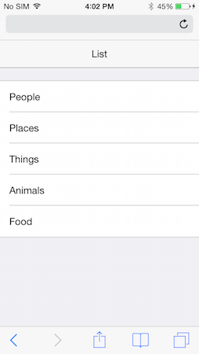 -
Navigation List with Titles
By adding a class of
navto the list item, it will render a navigation indicator. This enables you to easily designate a list as navigable for your users. -
Navigation List with Titles & Subtitles
Here we see a list with a title and subtitle. Just as titles are designated with an H3, subtitles are designated with an H4.
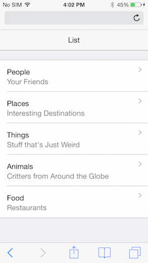 -
List with Title, Subtitle and Detail
You can add a detailed description of a list item using a paragraph tag. This is usually used in conjuction with a title (H3) and subtitle (H4).
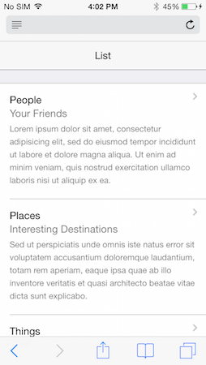 -
Icon with Title
You can use a span with a class of
iconand then some CSS to render a background image to display icons in list items. In this example we have an icon followed by a title.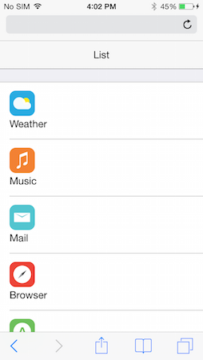 -
Image with Title & Detail Indicator
This list has a combination of an image followed by a title.
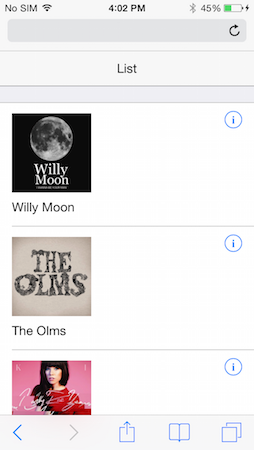 -
Image with Title, Subtitle & Detail
Here we have a list of items with an image, a title, a subltitle and a detail
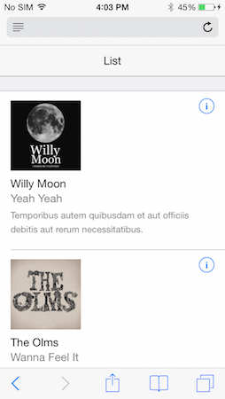 -
List with Header
If you want your list to have a header, just put an
H2directly before it. A header might provide a basic introductory discription of what the list is about.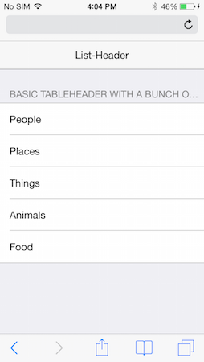 -
List with Footer
If you want, you can put a paragraph tag immediately after a list to provide it with a descriptive footer. You would do this when you want to give the user important information that should see after reaching the bottom of the list.
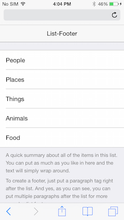 -
Titled List
You can create what's called a titled list by simply providing a serious of individual but related lists with titles (H2s). You might use this approach if you have a long list of items that you need separated out in related groups, such as fruits, vegetables, meats, etc. to indicate food groceries. Each section we be a separate list with its H2 header.
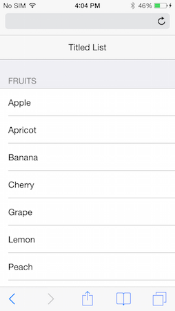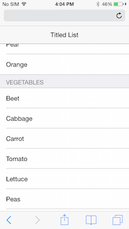
Composite Layouts
Although the simple list layouts provide basic structure for display data, you may have more sophisticated needs. ChocolateChip-UI provides a number of complex layout patterns that you can use for this purpose. These allow you to create columns within the list item for organizing your data in more meaningful and visually pleasant ways. In most cases you create these layouts by first putting the class comp on the list item.
-
Navigation List with Title & Subtitle
Setting up a navigation list using a comp layout results in the navigation indicator always being vertically centered to the content on the left.
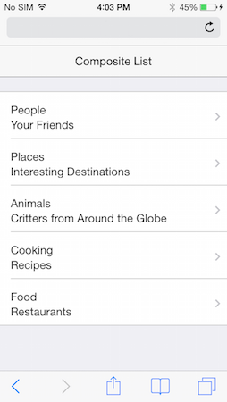 -
Navigation List with Title, Subtitle & Detail
Another example of a comp layout where the navigation indicator is perfectly centered vertical to the content in the list item.
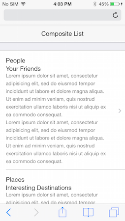 -
Switched Layout
The switched layout allows you to change the visible order and appearance of a list, giving more prominence to the subtitle than the title. This is accomplished by using the class
switchedon the list items.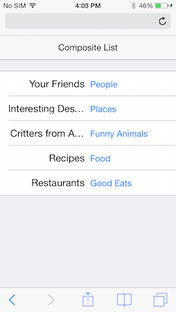 -
Parallel Title & Subtitle
Normally a list item's subtitle is dislayed under the title. however, using the structure of a comp layout, you can have the subtitle parallelt to the title.
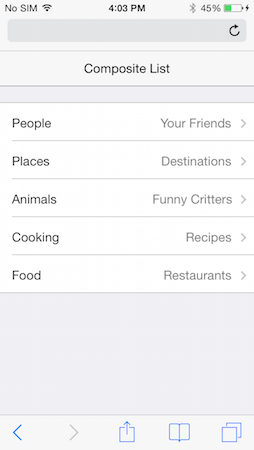 -
List with Detail Indicators
Sometimes, instead of using the common navigation indicators, you want your users to know that tapping will show them a detail page for that list item. In that case you would use a detail indicator.
In a comp layout, the detail indicator gets centered vertically to the list item content, like a navigation indicator.
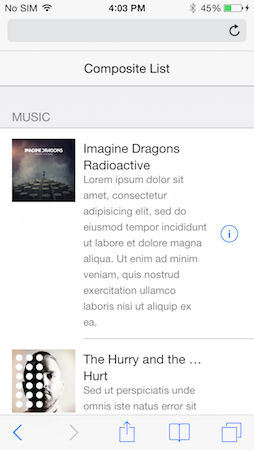 -
Image with Title & Subtitle
Comp layouts allow you to create more visually pleasing arrangements, such as aligning the title and subtitle next to their image.
-
List with Counters
Comp layouts provide a way for you to show counters on a list item.
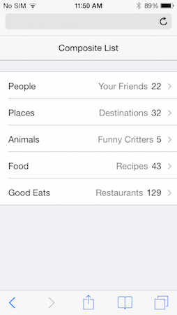 -
List with Date/Time
Comp layouts provide a way to display date/time values in a list item.
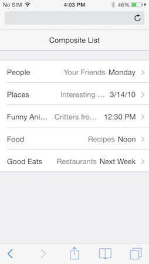 -
List with Icons
Just as with the comp layout with images described above, you can use ChocolateChip-UI's icon tag to display icons and title/subtitles in a list item. You will need to provide you own icon images and style each icon with CSS to display as intended.
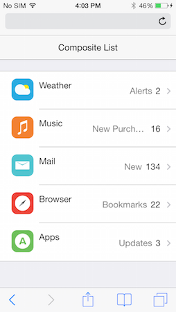 -
Grids
ChocolateChip-UI provides a system of grids which you can use for your app. These are done using CSS3 flex boxes.
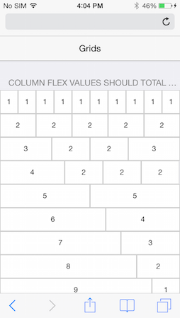
Navigation Types
ChocolateChip-UI provides a number of layouts and widgets that enable a user to navigate through a group of content. These always involve some type of visual change, sliding or toggling.
-
Navigation List
A navigation list provides a means by which a user can see a large number of choices and drill down to see more information on the choice. Please be aware that creating situations where the user has to tap may times to arrive at the deserved content can result in frustration. It's always best to keep your navigation as shallow as possible.
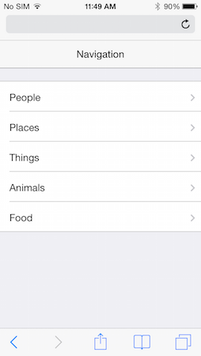 -
Navigation List with Bottom Toolbar
A navigation list can also have an accompanying toolbar where you can add addition buttons for some particular purpose.
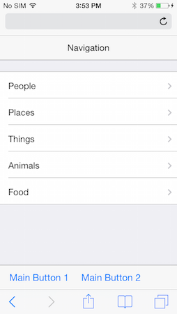 -
List with Back Navigation
When the user taps a navigation list item, the app automatically brings the user to the destination screen. By placing a back button in the navigation bar, you allow the user to return to the previous screen. This does not require any coding for this to work. Back navigation automatic in ChocolateChip-UI.
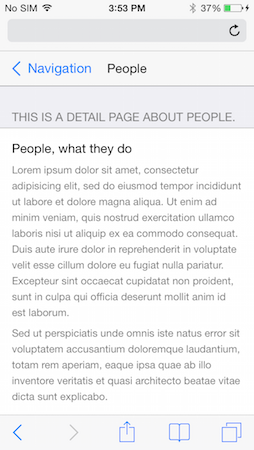 -
List with Detail Indicators
A detail list is the same as a navigation list. The difference is that instead of using navigation indicators, you use detail indictors. These mean that when the user taps the list item, they will be show the detail view for that list item. With navigation lists there is no indication what will come next, the user might have to navigate to other screens.
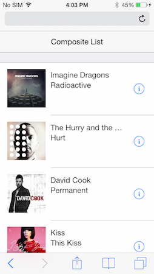 -
Tab Bar
The tab bar layout provides a convenient way to enable the user to quickly toggle between several important views. This is great for an app that only has three to five screens.
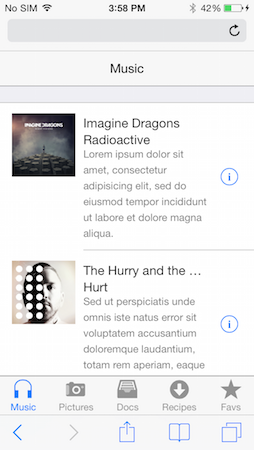 -
Tab Bar with Navigation List
If you want to use a tab bar but also have more screens than can fit, you can you can make the last tab bar item a navigation list. This will give your user access to more content than the default tab bar allows. Bare in mind that the other tabs should be the screens that the user will most like want to access. The navigation list should be for content that is less likely to be accessed.
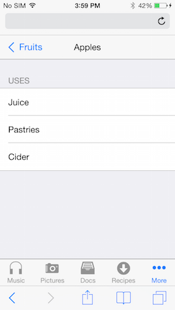 -
Horizontal Scroll Panel
You may want to provide your user with a series of content, perhaps media, that they can access quickly and easily. A horizontal scroll panels is perfect for this.
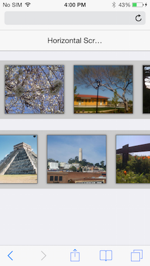 -
Carousel
Using a scroll panel with large amounts of media can sometimes have a performance impact on your app due to memory usage. In that case you should consider using the carousl. It only ever display three items at any time, resulting in less memory usage. It lazy-loads the content as the user scrolls.
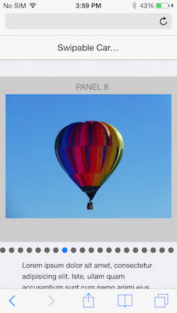 -
Pagination Control
When you have a lot of content of a similar nature that you want your user to be able to peruse, you can use the pagination control. You can have pagination horizontally or veritcally.
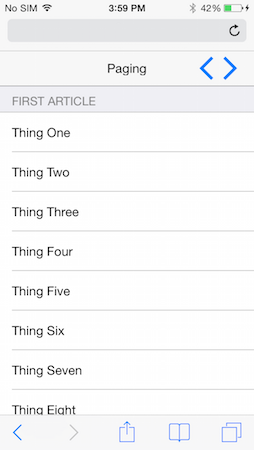 -
Slideout Control
Another method of enabling navigation of app content is the slide out control. This was popularized by many social apps with their "hamburger" buttons. Tapping the hamburger button opens a slide out menu allowing you to change the content in the screen below.
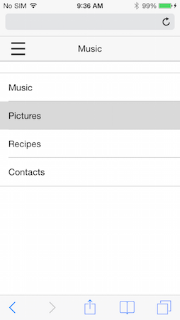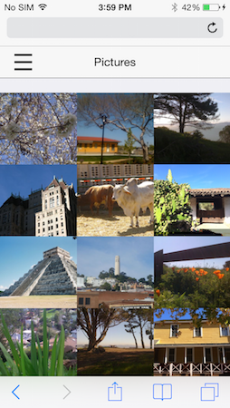
Widgets
ChocolateChip-UI provides a number of common controls to allow your users to make choices, change values and set states in an app.
-
Busy Indicator
You would use this when some actions, such as an Ajax request for data, might take an indeterminate amount of time.
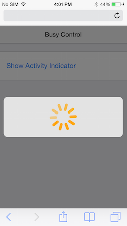 -
Progress Bar
Like the busy indicator above, you can use the default HTML5 progress bar to give the user feedback about the progress of an activity.
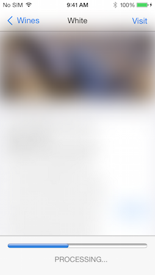 -
Popover
When you want to provide some user choices in a menu, you can use a popover.
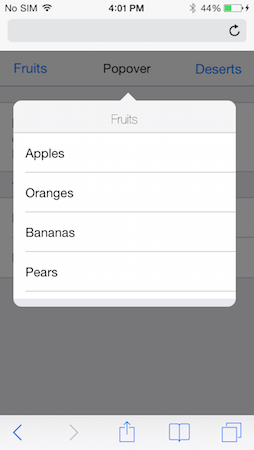 -
Popup
Alerts and notifications are provided with the Popup widget.
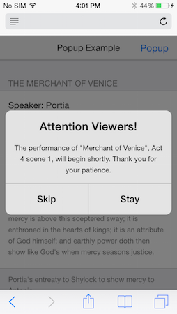 -
Search
This widget is just a shell for you to implement search. You will need to write or use the code to make the search happen.
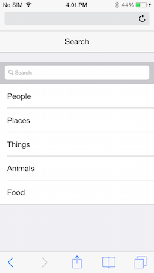 -
Range Control
This input, using the native HTML5 range, allows your users to choose various values. Using stops, you can make it snap to the units you indicate.
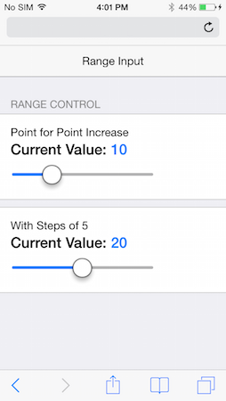 -
Stepper
This simple widget allows users to indicate value between a small set. If you have great values, consider using a range widget.
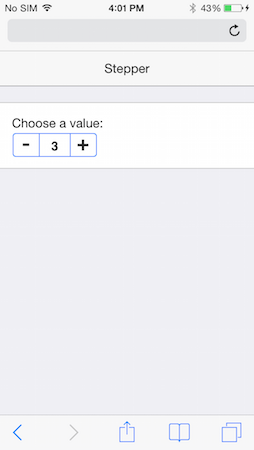 -
Select List
This type of widget allows the user to make one out of a number of possible choices. Think of it as just a fancy-looking radio button group. Under the hood, that's what it actually is.
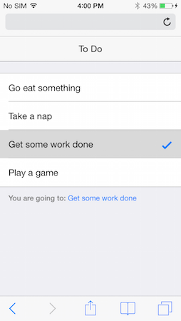 -
Switches
These allow your uses to turn something on or off. In effect they are just fancy checkboxes, literally.
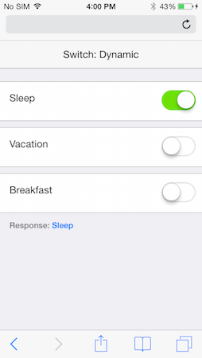 -
Segmented Buttons
Sometimes you need to give your user several related choices. You can use segmented buttons to group them together conveniently.
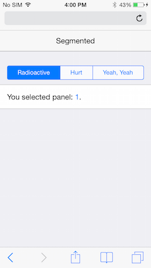 -
Segmented Toggle Buttons
Sometimes you may need to provide several panels of content to your user, but want to minimize the space these take up. You can use the segmented toggle widge to do this. Tapping a button toggles its corresponding panel.
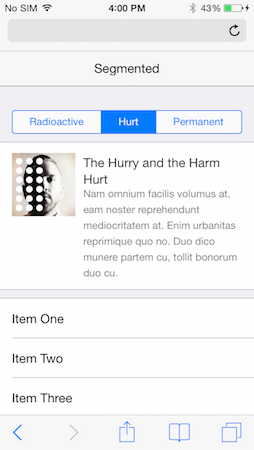 -
Sheet
Another useful widget is the sheet. This allows you to present the user with a screen of things. These might be action buttons, other widgets, notifications, etc. That's up to you.
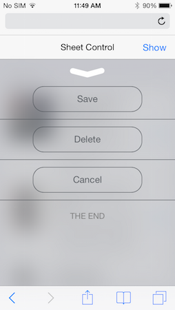 -
Editable List
Sometimes you need to let the user do something with your list, such as change the order of items or delete items. ChocolateChip-UI provides the Editable List widget for this purpose. When you create an editable list, ChocolateChip-UI puts and "Edit" button in the top left of the navigation bar. Tapping this displays deleting indicators or move indicators, or both. You get to decide what happens. After the user moves or deletes items they can finally their choice by tapping the "Done" button. This can execute a callback with which you can persist the user's choice.
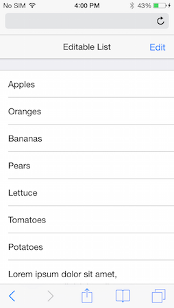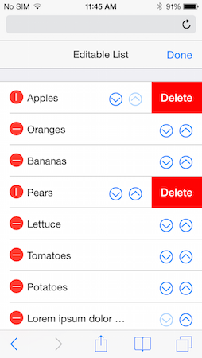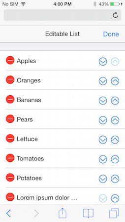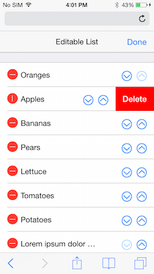 -
Split Layouts
Split layouts are specifically for tablets. It is basically a flattened out navigation list. Instead of having to drill down to the final detail screen, but the navigable list and the detail screen are show simultaneously. When the user interacts with the items in the master list, the content in the details screen gets updated.
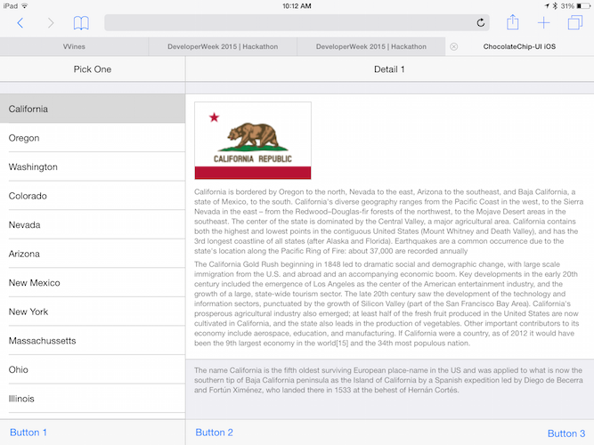
Right-to-Left Support
-
ChocolateChip-UI provides full support for right-to-left languages, such as Arabic, Farsi, Urdu, Kurdish, Hebrew, etc. Layouts and controls are automatically switched to function properly for a right-to-left language. This includes all interactive animations as well.
Supporting a right-to-left language is ridiculously easy. Just put the attribute
dir="rtl"on your apps HTML tag. That's it. At load time the correct language directional features will be applied.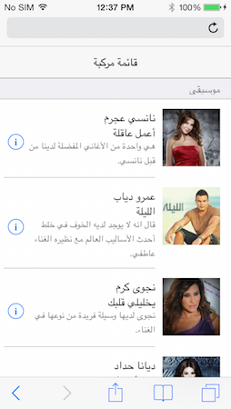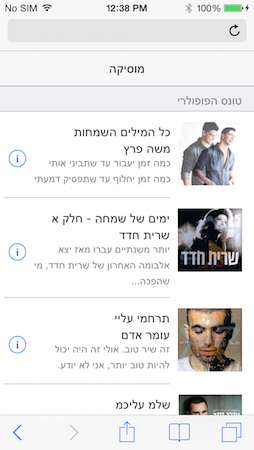
Technologies
-
jQuery
ChocolateChip-UI is built on top of jQuery. This means anything you can do with jQuery, you can do with ChocolateChip-UI, such as Ajax, Deferred Objects, etc.
-
HTML5
ChocolateChip-UI uses the simplest possible valid HTML5 markup to create its structures. It then beautifies these and brings them to life with sophisticated use of CSS3. This makes your app light, which means it loads quickly and uses less memory.
ChocolateChip-UI is for use on modern mobile devices. As such it may not work well on older devices and mobile operating systems. ChocolateChip-UI supports the following Operating Systems:
- Android: starting from Ice Cream Sandwich (4.0) up to the current version.
- iOS: starting from verion 7 up to the current version.
- Windows Phone: start with version 8.0 up to the current version.
-
Animations
All layouts and widgets that the user can interact with have built-in animations. These are not done with JavaScript but with hardware-accelerated CSS. This gives your app a smooth, natural feel as the user interacts with it.
-
Gestures
ChocolateChip-UI provides its own module for handling gestures and events. It also has an abstraction layer for mouse, touch and pointer events. This simplifies prototyping on the desktop and moving to mobile devices for further testing. The following gestures work just like any other gestures in jQuery. They work with mouse, stylus or finger:
- tap
- singletap
- doubletap
- longtap
- swipe
- swipeleft
- swiperight
- swipeup
- swipedown
Please see "Events" in the Tutorials section for more details.
-
Themes
ChocolateChip-UI was created with the concept of themes. These create the look and feel for each mobile operating system, using the same markup and JavaScript for all. The themes are organized to make it easy for you to open up the source code and quickly change the colors used in a theme. We use the popular LESS as our CSS preprocessor. Learn more about LESS before you attempt to modify a theme.
-
Theme Roller
To make it easy for you to spice up your app with color without out having to mess with LESS, we provide a theme roller on this site. You can find it in the Community section. You can colorize your app in several ways. First, the theme roller allows you to pick which theme you want to colorize: Android, iOS or Windows Phone. Next you can choose to color text and secondary control structures in your app. Or you can be more radical and also color the navigation bars and toolbars, giving your app a strong feel. You can also choose a secondary color. This affects a small subset of controls and indicators in your app.
When you have the colors the way you want them, just copy the stylesheet from the theme roller and paste it into the corresponding stylesheet of your app.
-
Pub/Sub
ChocolateChip-UI provides a number of function to implement pub-sub. This is used for obsering and notifying when the user interacts with the app, or when other changes occur in the app's life cycle.
You can setup a method to publish a broadcast when a certain condition occurs. You can also pass on relevant data in this publication. Your app can have many means of publishing the same broadcast, providing appropriate data.
You can also create subscribers. These listen for their publication to occur. This does not involve polling, so it will not impact the performance of your app. You can write a subscription to check the data that came with a publication and make decisions based on the type of data received.
You can also unsubscribe from a publication at any time.
These pub-sub patterns enable you to easily decouple the code that is used to update the UI based on changing conditions.
-
Data Binding
There are ocassion where you content that will be dynamic, depending on changing conditions. Normal you might deal with this by directly making updates in your code. This results in tightly bound code and what is commonly know as "spaghetti code". ChocolateChip-UI provides some simple data binding to enable you to avoid needing to write complex code to keep your form input up to date with your UI. It does this using two attributes:
data-controlleranddata-model. When a form controll and a UI element have the same data-controller/data-model value, ChocolateChip-UI sets up code to update the UI automatically when the value of the form control changes. This is called one-way data binding. In most cases you only need one-way binding. If you need two-way data binding, you can accomplish that by implemenint a mediator to do so. Mediators are described below. -
Mediators
Mediators are a development pattern that enables you to decouple the code needed to keep several things in sync. Using ChocolateChip-UI's pub-sub, you can define a mediator that will listen for a publication broadcast when the user interacts with the UI. Upon receiving this publication, the mediator can update the data model, post data to a remote source, etc. This allows you to decouple these types of data maintenance from the code that handle's the UI interactions. The code for the UI only broadcasts a publication, perhaps with relevant data. The mediator captures this and handles it as necessary. This means that the model on the other end can easily be switched out. This is esspecially useful for unit testing or early prototyping of your app.
-
Navigation System
ChocolateChip-UI provides the easiest possible way to build complex navigation. Just but a navigation indicator on your list items and the value
data-goto="somePlace". The data-goto value is the id of the screen you want to navigate to. On that page just put a button with a class of back in the top navigation bar. That's it. When the user taps the navigation list item, they will be brought ot the destination. While there, if they tap the Back button they will return to whence they came. No JavaScript required.When the navigation occurs, ChocolateChip-UI fires an event: navigationend. It also publishes two broadcasts to which you can subscribe: 'chui/navigateBack/leave' and 'chui/navigateBack/enter'. These contain the id of the article which the user is leaving and the article to which the user is going. These are published while the user is navigation forwards, as well as backwards.
-
Templating
ChocolateChip-UI has its own templating engine. If your needs are basic, this will be sufficent. It provides you with the ability to create templates with JavaScript logic for complex conditional processing. It is as efficient as Moustache or Handlebars in performance tests. However, you can use whatever Template engine you want.
-
Modern JavaScript Library: ChocolateChipJS
By default, ChocolateChip-UI runs on jQuery. This is the most widely used JavaScript library today. However, choice is good. We also provide an alternative to jQuery called ChocolateChipJS. Why? It's much smaller than jQuery, so it loads faster. Even more important, in performance tests where typical DOM manipulations are performed, ChocolateChipJS is on average 30% faster than jQuery. This makes apps created with ChocolateChipJS feel snappier than their jQuery equivalents. It is also much faster than the jQuery clone, Zepto.
ChocolateChipJS avoids some of the API inconsistencies that have been with jQuery since its creation. ChocolateChipJS also offers support for ECMAScript 6 Promises, allowing you to use these with its Ajax methods. You can get the sourcecode for ChocolateChipJS. When you build ChocolateChipJS with support for the modern Promises API, you also get a version of Ajax methods that use these automatically. This also includes a polyfill for browsers that don't yet support promises. This allows you to use sophisticated and efficient patterns for avoiding nested callbacks in your Ajax requests.
ChocolateChipJS is not a drop-in replacement for jQuery. Their APIs are quite different. ChocolateChipJS shares many function names with jQuery that work similarly, but you need to know the differences. ChocolateChipJS also offers features that jQuery lacks. These can sometimes be convenient timesavers that jQuery would require multiple lines of code. Please consult the documentation for ChocolateChipJS on this site to learn more.
If you are going to use plugins or libraries that depend on jQuery, you will need to stick with jQuery.
-
Plays Well with Others
ChocolateChip-UI was built to be versatile. We did not want to provide every imaginable feature like some other frameworks, forcing you to work our way. Instead we give you the freedom to choose what you want to use to compliment your app for the features you require.
Depending on your needs, you can use libraries for MVC structure, data binding, routing, etc. Some options are: Backbone, Ember, Rails, Angular, SomaJS, VueJS, Director, SammyJS, Knockout, etc. Be aware they you may need to make minor adjustments to how you use ChocolateChip-UI to use it with these. We have tried to be as agnostic as possible.